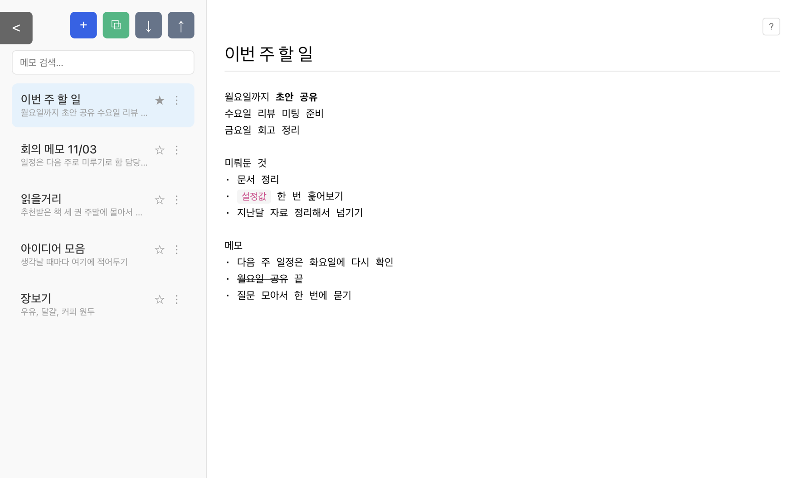

생각나면 바로 적는
가벼운 메모장
가입도 설치도 없습니다. 링크를 열면 그 자리가 메모장입니다. 쓴 내용은 어디로도 전송되지 않고 내 브라우저 안에만 남습니다.
바로 시작하기무료 · 로그인 없음 · 설치 없음

이런 걸 할 수 있습니다
저장 버튼이 없습니다
타이핑을 멈추면 알아서 저장됩니다. 창을 닫기 전에도 한 번 더 저장합니다.
중요한 메모는 위로
목록에서 ★를 누르면 그 메모가 맨 위에 고정됩니다.
제목이든 본문이든 검색
검색창에 단어를 넣으면 메모가 바로 걸러집니다. 대소문자는 가리지 않습니다.
간단한 서식과 되돌리기
⌘B 굵게, ⌘U 취소선, ⌘E 코드, ⌘Z 되돌리기. 되돌리면 커서도 제자리로 돌아옵니다.
메모는 어디에 저장되나요
- 서버로 보내지 않습니다. 계정도 없고, 쓰신 내용은 지금 쓰는 브라우저 안에만 저장됩니다.
- 그래서 브라우저 기록·사이트 데이터를 지우면 메모도 함께 사라집니다. 시크릿 창에서 쓰면 창을 닫는 순간 없어집니다.
- 소중한 메모는 가끔 앱 안의 ↓ 버튼으로 파일로 받아두세요. ↑ 버튼으로 다시 불러올 수 있습니다.
- 휴대폰과 노트북처럼 기기가 다르면 메모는 따로 저장됩니다. 옮기려면 내보내기 파일을 쓰세요.